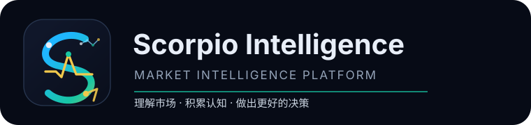
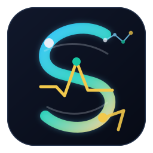

Market intelligence
ENVIRONMENTRead environment, breadth, and risk state

MARKET INTELLIGENCE / 2026
Understand the market before you trade.
Turn market context, asset evidence, portfolio exposure, and review notes into one traceable research brief—so you can see what changed, why it matters, and what to review next.
A research and decision-support tool. It is not investment advice, a return guarantee, or a trading instruction.
THE RESEARCH CONSTELLATION
Place scattered market information back into an explainable context, so every observation carries evidence, boundaries, and a next step.

Cognition engineSCORPIO CORERead environment, breadth, and risk state
Gather evidence and validate multidimensional data
Trace exposure, concentration, and connected risk
Record outcomes, error, and the next hypothesis
BRAND ORIGIN / COGNITIVE CONSTELLATION
AI is changing how we gather information, understand markets, and make decisions. Scorpio Intelligence was born from that shift: not to add noise, but to help serious observers find a verifiable direction in complex markets.
2018 → FUTUREInformation became abundant; useful filtering became harder.
Tools improved efficiency while market understanding stayed fragmented.
Language, knowledge, and pattern capabilities opened new research possibilities.
What is scarce is not information, but reliable judgment.
Scorpio Intelligence begins, augmenting market cognition with AI.
See through noise, understand the market, and decide with clarity.
“Future advantage comes not from the volume of information, but from the depth of understanding and the quality of decisions.”
THE COGNITIVE LOOP
Scorpio does not make the decision for you. It continuously organizes questions, hypotheses, evidence, and results while keeping independent human judgment at the center.
What is happening, and which variable truly matters?
Build an explainable, falsifiable, bounded judgment.
Cross-check with multiple dimensions, time, and evidence.
Record outcomes, review error, and improve the next cycle.
THE RESEARCH ARCHIVE
Scorpio brings multi-asset research, reasoning checks, and data reading into one continuous workflow. Public pages show only sanitized product slices, preserving research density without exposing accounts, licenses, private strategies, or internal chains.
PUBLIC DEMO / Demonstration samples only. No customer accounts, license state, private strategies, or internal production information are shown.
DELIVERY PATH
From individual research to team delivery, capabilities, data scope, and service boundaries stay clearly aligned.
For individuals building a consistent research workflow.
For deep researchers who need full data penetration and review.
For organizations requiring centralized licensing and delivery boundaries.
QUICK COMPARISON
Every edition is a research and decision-support tool. No return guarantee, managed investment service, or automated trading instruction is provided.
Review the product, version changes, and research boundaries with clear expectations.
Use the account area for licenses, downloads, and local deployment information.
Bring real research friction to us and help the product keep calibrating.
PUBLIC BOUNDARY
The public site shows research experience, product capability, and delivery. It does not disclose private methods, internal chains, or personalized strategy thinking. Scorpio augments research cognition; it does not replace independent judgment.
Read the changelogThe core orchestrates processing logic to generate validated result data.
Traceable packages are formed by edition, date, and research scope.
Authorized delivery keeps result data consistent across devices.
The desktop client pulls results into research and independent decisions.